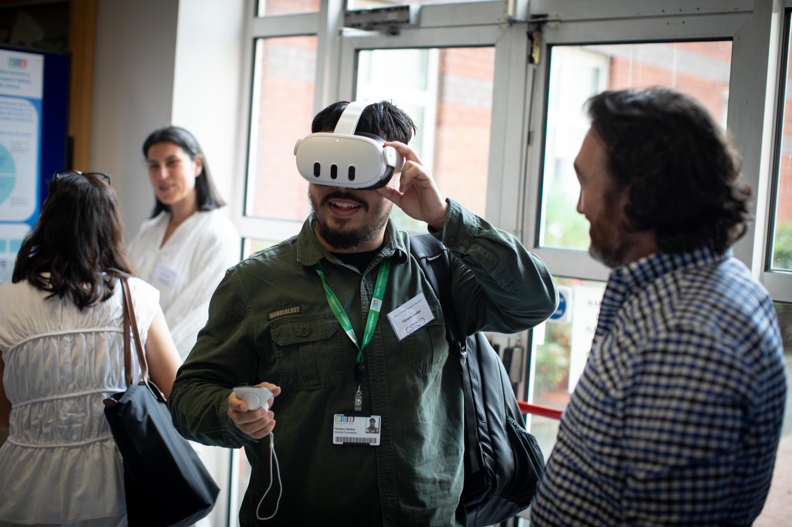

Flaviano Santos
Psychologist • Neuropsychologist • Cognitive Neuroscientist
Researching Virtual Reality, Social Cognition, Digital Health and Healthcare Innovation.
Psychologist • Neuropsychologist • Cognitive Neuroscientist
Researching Virtual Reality, Social Cognition, Digital Health and Healthcare Innovation.

Presented ongoing work developing immersive Virtual Reality experiences designed to prepare children for hospital visits and clinical procedures such as MRI and cannulation.
The project combines immersive familiarisation experiences with interactive coping supports, following an implementation-informed and user-centred design framework involving children, caregivers and clinical teams.